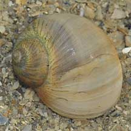
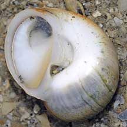
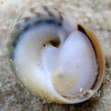
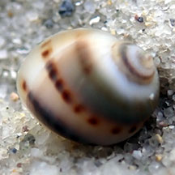
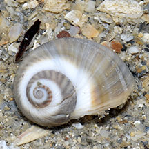
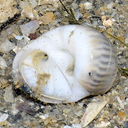
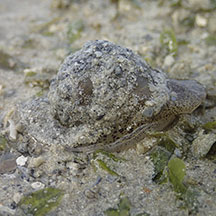
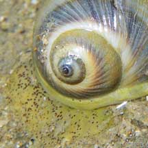
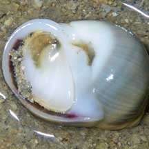

|
|
| shelled snails text index | photo index |
| Phylum Mollusca > Class Gastropoda > Family Naticidae |
| Spotted
moon snail Natica gualteriana Family Naticidae updated Aug 2020 Where
seen? This moon snail with a spotted body is sometimes
seen on sandy areas near reefs on some of our Southern shores. It
is also known as Gualtieri's moon snail. |
|
 Sisters Islands, Feb 10 |
 Small comma-shaped depression on underside. Operculum shelly with a dark smudge. Sisters Islands, Feb 10 |
 Body white with dark spots. Cyrene Reef, Jul 10 |
 Small, young one. |
 |
| Human uses: It is collected for food and the shell trade. |
 |
| Spotted moon snails on Singapore shores |
On wildsingapore
flickr
|
| Other sightings on Singapore shores |
 Big Sisters Island, Feb 19  Photo shared by Loh Kok Sheng on flickr. |
 Terumbu Pempang Laut, Aug 16 Photo shared by Richard Kuah on facebook. |
 |
 |
| Acknowledgement Grateful thanks to JK for sharing the ID of this snail on the wild shores of singapore blog. Links
|